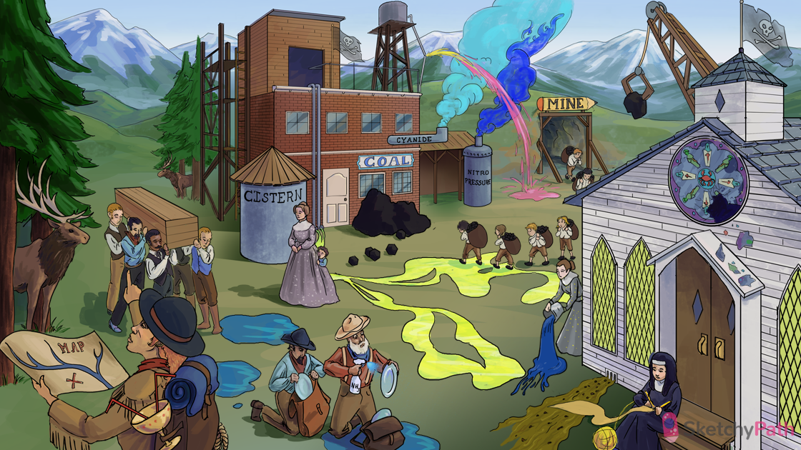

Frontier MAP: magnesium-ammonium-phosphate (MAP) renal stones (second most common in adult)
Stag antlers: MAP stones can present as “struvite” or “staghorn” calculi
Urease spray: MAP stones can form during UTI with urease positive organism (urea → ammonium + CO2)
Blue puddles: basic urine decreases the solubility of phosphate → MAP stone formation
Goblet with ureteral straws: MAP stones can form during a UTI with a urease positive organism (e.g. Proteus, S. Saprophyticus, Klebsiella)
Coffin lid: MAP crystals have a characteristic “coffin lid” or rectangular prism shape on microscopy
Needles in uric acid yarn: uric acid (urate) stones
Yarn ball on toe: gout causes hyperuricemia → uric acid stones
Raised white archers and knights: conditions with rapid cell turnover (e.g. leukemia and lymphoma) can cause hyperuricemia → uric acid stones
Falling shards: tumor lysis syndrome can cause hyperuricemia and uric acid stones
Mysterious acid secretions: idiopathic acidic urine (50% of patients with uric acid stone)
Acid puddles: uric acid stones preferentially form in an acidic urine environment
Draining mud: metabolic acidosis (e.g. caused by chronic diarrhea) → increased H+ excretion → uric acid stones
Dumping alkaline fluid: alkalinization of the urine (e.g. with potassium citrate, potassium bicarb) can effectively treat and prevent uric acid stones
Pure nun: allopurinol can prevent uric acid stones (with high cell turnover, or high purine metabolism)
Diamond windows: uric acid stones have characteristic diamond-shaped, yellow-brown crystals on microscopy
“Cistern”: cystine stones (occur in cystinuria)
Acid pools: cystine stones form preferentially in an acidic urine environment
COAL: cystinuria is caused by a defect in PCT reabsorption of cystine, ornithine, arginine, and lysine
Receding shy kid: cystinuria is caused by an autosomal recessive defect of resorption of amino acids in the PCT
Kids carrying coal: cystinuria usually presents in childhood with recurrent, non-calcium, renal stones
Stag antler: cystine stones can also present as “stag-horn” calculi
Hexagonal coal briquettes: cystine crystals have a characteristic hexagonal shape on microscopy
Blue “Nitro-pressure” smoke: the diagnostic test for cystinuria is the sodium cyanide-nitroprusside urine test
Pink stream in the smoke: urine of a patient with cystinuria will turn red-purple in a positive sodium cyanide-nitroprusside test
Pencil MINE: in severe cases, penicillamine can be used to chelate and lower cystine levels (prevent cystine stones)
Grasping crane: chelating agent (penicillamine)
Translucent X-ray flag on church: uric acid and cystine stones are radiolucent (Calcium and MAP stones are radiopaque)
Translucent X-ray flag on COAL mine: uric acid and cystine stones are radiolucent (Calcium and MAP stones are radiopaque)